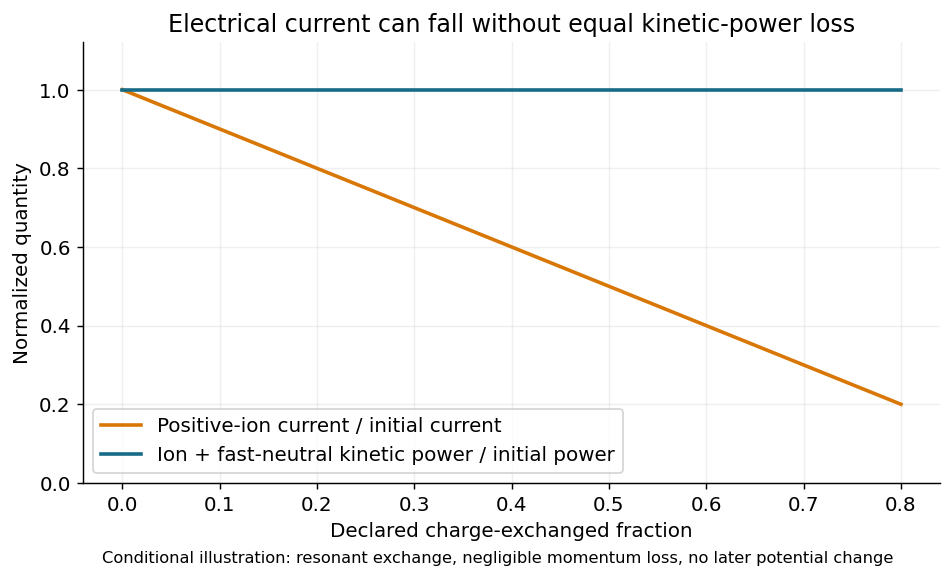
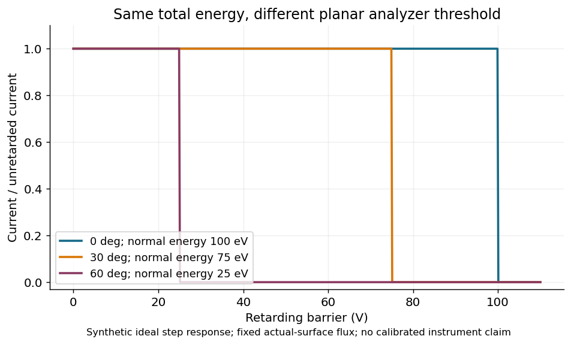
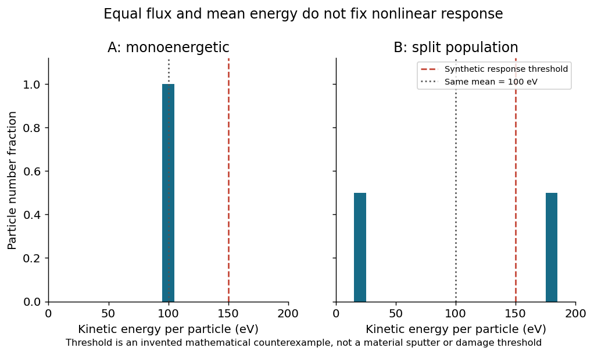

离子辅助观测与材料响应
T10 第二轮 · Kaufman 栅控源优先 · 2026-10-02
源端设置、仪器响应、工件暴露与薄膜响应的可追溯接口和参考算法
历史源研究包：原33项轻量检查；完整合成及实际设备/材料验证 not_run_awaiting_device。无生产放行。浏览器布局未验证，结构与本地链接已检查。
离子辅助观测与材料响应验证的范围
结论和读者
本轮面向镀膜研发、计量、光学设计与质量工程人员。Kaufman 栅控源是优先研究对象，实际用户源型、型号、可用诊断、膜材批次和已加工样片均未知。工作完成的是可审计的物理模型、观测合同、离线数据算法、验证执行器和反例，没有执行实机、生产、环境或损伤资格验证。
最重要的结论有两个层次。第一，电源设定、电学诊断、局部粒子分布和薄膜响应是不同的被测量，不能借单位相似而跳过传递证据。第二，未知项并不总是使所有结果都不可用。例如，若已获得真实表面处完整且校正的正电荷电流加权总动能/电荷谱，即使电荷态未知，带电组分入射动能流仍可算；但粒子通量、化学物种、快中性贡献及材料响应仍不能因此恢复。必须逐输出声明可辨识范围。
本包在新目录内补充 T10 首轮，不重写任何冻结结果。文中的数值全部明确区分文献特定条件、原创合成示例与 actual_unknown。没有给用户设备填入推测型号，也没有给材料填入“推荐束压”或默认 n、k。
一条证据链的五个对象
源端设定 s(t) 包含放电、束、栅和中和器各电路的命令与读回。它还需要机型/接线参考定义、固件、气体、维护状态和读数来源。源端电压的名字不能自行决定它是哪个电位差；源端束流也不能解释为某片基片上的电流。
束传输状态 f_s(x,E,Ω,t) 描述到达前的粒子分布。它依赖几何、碰撞、空间电荷和遮挡，粒种 s 同时包含化学组成、电荷态和每粒子核数。一个宽束的中心值不能决定总束流，更不能决定所有工位。
仪器观测 y 是分布通过仪器响应 K 后的结果。简写为 y = K[f] + b + ε。孔径平均、角接受、能量选择、鞘层、二次电子、仪表增益和时域滤波都属于 K 或 b 的定义。未知 K 不能由同一组 y 无条件同时识别。把平滑后的曲线称为分布会掩盖这一层。
工件暴露是沿实际轨迹和实际表面状态计算的局部通量、注量、能量与动量历史。介质面电位、离子独立暴露、温度、下层结构和反应气体都有可能改变后续响应。工件和金属探针不必电学等价。
材料响应包括有效膜密度、元素组成、相态、粗糙谱、应力、界面强度及指定光学算子下的 n/k 或 R/T。它们不是由束参数唯一决定的标签。光学测量还包括波长、角度、偏振、NA、带宽、背面与收集口径。响应的最终验证对象是独立样品，不是生成拟合参数的那一条数据。
状态用语及六类主张
沿用 T09 的 material_identity、measurement_result、conditional_prediction、production_acceptance、environmental_qualification、damage_qualification 六类主张。当前机器合同只允许前两类中的测量结构检查和条件预测输入检查；不能生成后三类放行。材料身份单独需要成分/批号证据，不以拟合 n 接近数据库来证明。
“结构有效”表示字段、单位和关系满足本包定义；“条件计算”表示在输入为真且模型适用时的数学结果；“独立验证”需未用于拟合/模型选择的真实证据。三者不可互换。SHA256 仅识别字节一致性，不认证仪器、样品、实验者或数据真实性。读数标为 checked 也不自动构成校准证书。
执行状态固定为：轻量数学检查已运行；完整合成矩阵 not_run_awaiting_device；真实设备/材料/产品验证 not_run_awaiting_device；浏览器布局 unverified。实际验证的缺口不是多跑几遍单元测试可以填补的。
必须保留的上游接口
- 四种厚度分开：设计厚度、真实几何厚度、QCM 等效厚度、光学 nd
- film 与 bulk 分开；源料密度、晶控显示密度、晶体参考密度与实际膜有效密度分开
- source、time、space、geometry、kernel、input、model 七误差轴分别追踪，相关时传联合结构
- T02 完整 oracle 仍 partial；T03 非负贡献求解器不支持净侵蚀；点12连续/离子参考及设备项 not_run；τ 非严格条件包络
- T08 完整 driver 未运行，非收敛 profile 端点不得称为有效置信界
- QCM 声学/温漂/tooling 与 MXC 派生语义仅约束沉积读数证据，不是离子诊断
来源基础是冻结 T04/T05/T09 合同及 T10 首轮；依赖原字节、哈希和用途在 dependencies/provenance.json。研究原目标原样作为依赖保留。本轮没有将另行恢复的37膜系条目或其变体解释为37种已验证工艺，也不扩展到配方发布。
本轮阅读顺序
第2章建立电场、粒子与能流账本；第3章解释杯与 RFEA 的前向算子；第4章建立空间/时间代表性；第5章连接净库存和材料状态；第6章设计响应辨识与留出；第7章给出可复算反例；第8章说明实现、资源边界和冻结交接。来源访问深度单独登记，摘要级论文不被写成已读全文。
Kaufman源到基片的能量与电荷账本
栅控提取和最终撞击能量
Kaufman 类 DC 电子轰击栅控源利用放电产生离子，再通过栅系形成宽束。RF 栅控源可共享一部分离子光学，但放电方式不同；End-Hall 无栅源的放电电压不能替换成 Kaufman 束电压。源品牌相同也不能代替结构身份。IS-02
以腔体地为共同参考，离子在位置 p 形成时电位为 Vp，工件表面瞬时电位为 Vs。若电荷态 z 在路径上不变、无非弹性碰撞，且能越过途中所有势垒，则能量守恒给出：
Eimpact[eV/particle] = Einitial[eV/particle] + z(Vp − Vs)[V]
这是原创的守恒表达，使用 eV 与基本电荷定义。源电源的读回只有在参考端、放电室等离子体电位偏差和基片电位均有依据时才可代入。负加速栅附近离子先加速而后减速，因此“正束压加负栅压的绝对值”通常不是近地工件的净撞击能量。栅间总电压影响提取能力和轨迹，不代表与最终能量可以独立调节。[IS-02]
简单平面冷离子空间电荷极限的 J ∝ ΔV^(3/2)/d² 只说明尺度。真实多孔栅的弯月面、束元交叠、热变形、污染和截获均会改变关系。本包不以 Child–Langmuir 平面式反演实际栅距或给额定工作点。代码 impact_energy 只做条件能量账本，负结果拒绝；非负结果也不证明中途没有更高势垒。
电流的粒子口径
带电粒子到达真实表面的通量记 Γs，单位 particles m⁻² s⁻¹。已校正正离子电流满足：
ji = e Σs zs Γs Γcharged = ji / (e Σs fs zs) fs为粒子数分数 Γs = ws ji/(e zs) ws为电流分数
粒子分数与电流分数不相等。合成束含80% Ar⁺与20% Ar²⁺，总粒子通量10¹⁸时，ji/e为1.2×10¹⁸。电流分数分别为2/3和1/3。把两类分数同名传递会系统性多算或少算粒子。
O₂⁺每个入射粒子含两个氧核但只有一个基本正电荷；O⁺与O₂⁺不能通过总电流单独区分。电荷数用于电学账本，核数用于元素账本，式单元数属于最终膜组成账本。即使气瓶是O₂，也不能假定所有粒子都是O₂⁺。未知组分保留 unknown；不从厂家源型或其他气体实验补百分比。
原始杯读数需要另外处理电子、二次发射和偏置。第3章给符号账本。这里 ji 已经是去除这些效应后的正离子电荷流，不能将面板电流直接作为函数 flux_from_corrected_current 的输入。
带电能流的一个可辨识特例
令 u=E[eV]/z，单位V，g(u)=dji/du为正电荷电流加权、真实表面处、总动能/电荷的分布。由 dji=e z dΓ 得到：
qcharged = e Σs∫E dΓs = ∫u g(u)du [W/m²]
因此未知 z 并不必然阻断带电入射动能流。成立所需条件非常严格：谱完整，电流校正和绝对透过率有效；每个u对应总动能，不是只测法向动能；分布与通量使用相同表面、时刻、面积和状态；没有漏掉被分析器排除的带电组分。仅有一个未经定义的“平均能量”和杯流不足以套用此式。粒子数加权均值不能冒充电流加权均值。
这修细了首轮“只有 j 和平均 E/q 时通常不可辨识”的范围：若平均的权重和完整性恰好满足上式，则 qcharged 可辨识，但 Γcharged 仍受 z 影响。代码 kinetic_flux_from_charge_spectrum 实现分箱求和；每箱用中心值时有求积误差，只有箱内电流加权均值已知时才是精确矩。
平面分析器与总能量
理想平面静电阻滞器选择速度法向分量。单角度近似下，u_normal=E cos²θ/z，而不是E/z。θ是粒子相对分析器法向的入射角。100 eV 的单电荷粒子在60°入射时，法向能量只有25 eV；此时不能把杯流乘cos的投影修正当成能量修正。IR-02
总能量恢复还需要角分布、透过率和鞘层模型。质量/电荷分析与 RFEA 提供互补信息，但两者采样位置不同也会引入传输偏差。未经响应校正的−dI/dV不是任意物种的粒子数概率密度。实现采用理想阈值作可审计算例，不宣称是实际探针固件。
中和与表面电位
空间电荷中和是束内电荷密度平衡；表面电流平衡是到达正离子、到达电子、逃逸二次电子及泄漏的净电流平衡。两者不是同一约束。中和器主要提供电子，并非普遍把高速离子复合成中性束。IS-03
导电杯通常具有明确电位参考，而实际光学件可能浮置或已经覆盖绝缘层。将杯移到相同坐标只匹配几何，不保证电位、鞘层、二次发射或电子收集等价。表面电位随时间变化时，使用平均Vs计算平均能量还可能漏掉与通量的协方差。必须保留同一时间窗的联合历史。
荷交换发生在路径上的哪个位置
在近似共振荷交换且动量变化很小的情形，快离子与背景中性交换电荷，形成携带原快粒子速度的中性粒子及较慢离子。普通电学收集可能漏掉前者、计入后者。电流下降不保证动能流同比下降。IS-04
原创能量补充：若交换发生在电位Vc，快中性当时的动能近似为 E0+z(Vp−Vc)。它此后不再受静电场做功。未交换离子到表面的能量则约为 E0+z(Vp−Vs)。只有Vc与Vs之间的后续电位变化可忽略、散射/能损也可忽略时，才可说丢失电荷而近似保留原路径的最终能量。不能给中性粒子补上交换后的qΔV。
简化存活比例exp(−ng σ L)需要粒种、能量、气体温度/分压、路径与对应过程截面。电荷交换截面、总散射截面与动量转移截面不是可互换常数。本轮没有为实际气压或源距赋值，也没有提供实际快中性比例。
动能输入不等于温升
qkin=eΣΓE是到达动能流。反射粒子、溅出物和透入材料带走/储存能量；电子、辐射、反应和凝聚热又能贡献额外热量。表面温度还依赖热容、辐射率、夹具接触、导热和测温响应。因而热输入、温度与离子动能分别记录。代码明确 thermal_power_w_m2=null，不能凭一项守恒量生成工件温升保证。
本章示意图

原创条件图：只有后续电位变化、能损可忽略时才保持此能流关系。
束流诊断的前向模型和可辨识性
测到的是经过响应加权的分布
本章将测量装置视为算子而非理想读数器。对已离散的局部联合能角谱，xc为第c个cell积分后的粒子通量，单位particles m⁻² s⁻¹。记录cell积分量后，不再额外乘ΔE、ΔΩ、sinθ或表面cos。若原数据是每eV每sr强度，应在适配层明确积分和面积变换，再进入本接口。
第i个观测可写为 yi=Σc Aic xc+bi+εi。Aic含电荷、透过率、孔径和能量选择；bi含漏电/电子背景等。矩阵必须根据独立校准或显式模型获得，而不是为了得到预期薄膜性能反向调整。源端电流、杯电流、RFEA和热流计可以组成多观测向量，但不是所有组合都能唯一识别所有cell。
杯电流的符号
取向收集器输送净正电荷为正，简化电流密度账本为：
jraw = eΣs(zs+γescape,s)Γs − eΓelectron_collected + boffset
γescape是每个入射粒子导致并最终逃离收集系统的二次电子数，不是材料表面总发射率；回收的电子不产生同样净电流。正离子到达和电子逃逸都增加正读数，入射电子降低正读数。模型适用于已知收集区域，角接受和边缘场不能藏在任意γ里。IR-01
若使用粒子加权的平均z和γ，函数 correct_collector_current 求 Γ=(jraw−b+eΓe)/(e(zbar+γbar))。必须提供独立的偏置、电子背景与逃逸二次电子证据。实际γ受粒种、能量、角度和杯表面沉积状态影响。没有这些信息时，不可用γ=0填空；函数在纯代数输入下返回数值不代表参数已经被测量。
合成例Γ=2×10¹⁸、z=1、γ=0.4、收集电子3×10¹⁷及偏置0.012 A/m²，演示先加回电子项再扣偏置的符号。它不是任何真实诊断的校准值，也不提供抑制栅偏压操作建议。
理想平面RFEA的可执行核
本包为教学和反例采用：
Aic = e zc Tic H(Ec cos²θc/zc − Vi), zc>0 Aic = 0, zc=0
Vi为相对于已定义参考的阻滞势垒，Tic为独立给定的能角透过率，H为阶跃核。在恰好阈值处规定H=1/2，只是离散求积约定，不是物理分辨率模型。实际有限温度、栅丝电场、接触电位、碰撞和电压波动会使响应平滑；使用真实仪器时应替换为经过验证的核。
Gulbrandsen 等的原始比较研究说明 RFEA 读取的是探针鞘层之后的分布，几何和角接受影响其与非侵入式诊断的比较。[IR-02] Trottenberg 等对一台具体分析器的标定显示，方向响应可远强于单纯cos面积投影；该结果支持“必须测角响应”，不提供本机统一接受角。[IR-01]
不能把−dI/dV直接解释成全粒种数目谱：导数首先是响应卷积后的电荷加权量；噪声会被微分放大；T(V,E,θ)不恒定时导数还含透过率的变化。先平滑再求导需要记录平滑窗口与传递函数。窄谱结构小于实际分辨能力时必须报告不可分辨，而非增加显示点数。
逆问题的秩比拟合残差重要
令校正后的观测协方差为C，Cholesky分解C=LLᵀ，白化后求min ||L⁻¹(Ax−y)||²，约束x≥0。实现使用有界线性最小二乘，保留迭代预算和状态；没有静默正则化或负值截断。协方差须严格正定；奇异共享项需要显式降维或重新建模，不以任意小噪声让矩阵“可逆”。
在求解前，对白化矩阵按列缩放后检查秩和奇异值。列满秩只是给定离散模型的局部/线性可辨识条件，不证明实际谱无限分辨。秩亏直接输出unidentifiable，不能用最小范数解冒充唯一谱。先验或正则化可以选择某一解，但必须另记先验贡献，本轮不把它包装为数据独立识别。
两个粒子群若分别为100eV、z=1及200eV、z=2且角度相同，则两者E/z相同，理想RFEA两列成比例。更多阻滞点也不能分离二者；完整电荷谱可确定合计带电能流，却不能确定粒子总数。这个反例比重复拟合相同曲线更能暴露缺少质量/电荷诊断的问题。
协方差与边界
只有矩阵满列秩、解在非负域内部、观测协方差已知且A固定时，程序给出(AᵀC⁻¹A)⁻¹。这是条件线性协方差，未包含面积、透过率、波长/电压刻度、角度、模型失配或共享校准误差。边界解不给对称线性协方差；非收敛解不给可用谱。
若K参数也有不确定度，可用扩展状态η=[y,calibration,geometry,…]与雅可比J传播J Cη Jᵀ。但联合谱解近边界或秩接近退化时，一阶传播可能失效，需有物理支持的联合区间/抽样或停止推断。未知项不是方差0。
有限孔径与探针侵入性
杯读数是敏感度加权面积平均。权重归一只在测量支持完整时成立。函数 aperture_average 拒绝缺失支持后重新归一化：漏掉束边缘并不能把剩余中心值变成整片平均。
当孔径尺寸与梯度尺度相近，先建立局部场，再通过孔径核预测读数并与观测比较，不能把读数当作孔中心精确值。探针支架还可能挡束、改变电子收集或局部电场。原位探针与工件见证需分别论证几何、电学和材料状态代表性。任何具体安装、偏压或联锁设置都不在本包实现范围内。
本章示意图

原创合成图：总能量相同，平面RFEA法向阈值随角度变化。
工位与运动历史的代表性
三种代表性分别证明
几何代表性要求测量位置、法向、有效面积、遮挡和实际工件路径对应。电学代表性要求探针与工件的电位/鞘层/中和条件可比较。材料代表性要求见证片与实件具有相同或经过验证可转移的材料、温度、下层、表面处理与后处理。满足其中一种不代替其余两种。
Kaufman 源在转动/行星运动条件下的时间平均通量与刻蚀均匀性有原始会议研究线索，但当前仅核其摘要与元数据。IR-03 该研究的刻蚀对象与指标不能直接升级为本机离子辅助成膜的均匀性保证。本章的同步、验证留出及区间处理是原创工程合同。
坐标和面积只变换一次
固定腔体坐标中的工件轨迹为x(t)，表面外法向为n(t)。入射粒子速度指向表面，θ定义为其与内向法线的夹角。对于垂直于单束方向的通量Γperp，投到实际表面的通量为Γsurface=Γperp cosθ（可见且前向）。对分布需积分各方向，不能只对平均角做一次cos。
本包cells已按真实表面积积分，因此进入moments和time_integrate后禁止再乘cos。normal_momentum只因需要法向动量分量而乘cos，不是第二次通量投影。若要转换T02的射线束，适配层需给出RayBundle版本、面积归一和可见性证据；不能把同一面积投影在两个模块重复计算。
同一工位的蒸气、离子、快中性和电子可能有不同遮挡。修正板切断蒸气而未切断离子时，局部会发生离子单独暴露；反过来，电探针被遮住也不证明实件未受快中性。挡板命令与实际到位状态分列，unknown不能变成closed。
时间窗的守恒
对每个工件位置计算：
Dcharged = Σj Γcharged,j Δtj Uobserved = Σj qobserved,j Δtj Nnet = Σj gnet,j Δtj Rlayer = Dcharged/Nnet
各bin应是同一物理时间窗内的均值，Δt采用记录的有效覆盖时长。离子电流是瞬时采样还是滑动平均、QCM是否延迟、温度是否低通、各设备时钟是否存在偏置，都影响这个条件。先校正时间定义，再进行区间拼接；不要把异步仪表的同一行日志当成同步真值。
函数time_integrate有意不自动排序、补点、跨缺样插值或外推。重复、交叠、未覆盖终点和间隙都会拒绝。已知分段常数均值下矩形积分是精确账本；它不能恢复bin内未观测峰值。若要依据峰值损伤阈值，必须有足够带宽和独立瞬态证据。
全层比值是积分后相除，不是瞬时比值的算术平均。合成例前2秒净原子通量2×10¹⁸且离子通量10¹⁸，随后1秒只受离子轰击。全层D=3×10¹⁸，N=4×10¹⁸，R=0.75。若丢掉无沉积的最后一秒，只会得到0.5并漏报三分之一离子剂量。
运动平均的失效条件
长层经历足够且稳定的周期后，可考虑周期平均。但最薄层可能只覆盖部分相位；源漂移、转速变化、行星/公转有理频比、偏轴束和非同步挡板都会破坏“平均图乘时间”。应保存初始相位、转速/轨迹时间序列以及源状态的共同时间参考。
空间映射至少应包含拟用有效口径、边缘/遮挡梯度以及独立留出工位。网格密度由梯度和目标用途确定，不能预定“多测几个中心点”就满足所有空间带宽。选择验证位置之前冻结插值/积分模型；验证点不再拿回拟合，避免把同一图反复优化到看起来均匀。
面积平均、最小值、峰谷、RMS和分位数是不同统计量。曲面平均按真实面积加权，且须报告无数据区域。孔径权重与工件面积权重不能混用。有效口径之外排除任何区域都应有预定用途理由，不能见到低值后再缩小口径。
七轴误差实例
source轴保存离子源出口分布、气体组成和维护漂移；time轴保存仪表带宽、时钟和层起停；space轴保存有限孔径与测点支持；geometry轴保存位置、法向、轨迹和遮挡；kernel轴保存RFEA理想核或校准核及离散化；input轴保存电流/电压/面积/温度校准；model轴保存中性漏测、反应、鞘层与材料状态缺项。
共用电流增益使各测点误差相关，同一转架位置偏差又会同时改变蒸气与离子。不能把每个测点的标准差简单除√N当整炉平均不确定度。用于比值时共同误差也可能抵消，必须按模型雅可比的正负号传播，不机械相加。真正缺失的物理项保持unknown，不用一个大但无依据的百分比表示已经覆盖。
MXC和QCM证据的边界
冻结 MXC 派生审读指出显示值可能来自实测、替代设定、保持或转换，采样与日志速率也可不同。这里只继承reading_origin、parameter_event和时标证据字段，未再读取或分发其原手册。石英振荡器频率、电流或控制器显示不构成法拉第杯离子电流；QCM的热/应力频移不构成离子能谱。
共享挡板下旧蒸发源的真实热残余，是热历史与可见性的证据问题。它不能用来证明用户有Kaufman源、证明中和器状态、或把停止后显示反冲诊断为离子束残余。离子诊断必须有独立链，QCM到工件到达通量仍需T05的声学、温漂、捕集、几何和tooling合同。
从粒子暴露到材料状态和净库存
输入不应是一行电压电流
优先材料仍为Ta₂O₅、ZnS、TiO₂、YbF₃、SiO₂、MgF₂、Al₂O₃、H4、Ge、Cu、Cr、Al，基片为ZnS、Ge、K9、ZnSe。逐项材料证据沿用首轮条件矩阵，不新增未测材料常数。源料、沉积薄膜和基片是三个不同对象；H4需要厂商/牌号/版本，YbF₃不是YF₃，未知K9不能替换为另一个商业玻璃牌号。
暴露记录至少包含粒种/电荷态、联合能角谱、局部通量历史、温度/电位、反应气体、下层与表面处理。响应还依赖实际膜密度、组成、孔隙、相态、缺陷和后处理。即使D、U与最终厚度相同，材料也可能不同，因此本章把R和epsilon当有定义域的描述坐标，不当唯一材料状态变量。
元素账本比单个净速率更基本
令Na为被跟踪膜中元素a的面库存，单位atoms/m²。对同一明确膜层：
dNa/dt = Σs ηas νas Φs,arrival + Ra − La − Σs Ya,s Γs + Xa,interface
η表示对应物种/元素留存，ν为每粒子的该元素核数，R为反应摄入，L为脱附等损失，Y为逐元素溅出产额，X为已定义的界面交换。这个式子是记账框架，不意味着各项已分别测到。
只测净变化时，留存、反应、脱附、再溅射和再沉积通常不可分。无蒸气轰击实验的总失重也不能自动叫“纯溅射产额”，除非化学变化、挥发、污染和再沉积的干扰已分离。尤其氧化物、氟化物和硫化物，元素比例变化会使单个固定式单元模型失效。
本轮不生成Y(E,θ)数据库。公开不同源型或分子动力学结果只能在其靶状态、粒子、温度、势函数/测量条件内解释；未核条件不外推成Kaufman膜材参数。既有T04模型选择以独立逐元素净库存作为数值入口，本轮保持这一边界。
四种厚度与密度
若组成固定为ΣaνaAa，ν=Σνa，式单元摩尔质量M，实际有效膜密度ρfilm，则原子数密度natom=νρfilmNA/M。仅在组成和密度在区间内不变且元素比例相容时，有：
Δh = Nnet/natom = Nnet M/(ν ρfilm NA)
这是一段有符号几何厚度增量，不是最终厚度，不是设计层厚，也不是QCM显示厚度或光学nd。ρ发生变化时，面质量mA=ρh的导数为dmA/dt=ρ dh/dt+h dρ/dt；把致密化引起的厚度下降全部当溅射会出错。
代码inventory_thickness拒绝bulk和unknown密度作为实际膜状态，负N可在同一膜仍存在且状态有效时给负厚度增量。实际密度没有证据则输出null，不用“典型值”补成数据。合成示例允许synthetic_declared，但不能通过改标签变成实测。
净正生长与净侵蚀
R=Dcharged/Nnet，epsilon=(Utotal/e)/Nnet仅作为净成膜坐标。当N区间跨0或等于0，比值可能无定义或无界，程序返回zero_or_crossing；全负区间为net_erosion，不发布成膜R/epsilon。N严格正但区间宽度≥下界时，采用本项目保守规则ill_conditioned：只保留分母诊断区间，中心输出为null。
这个阈值不是普适条件数定理。分母区间也不是完整置信区间：D和U的不确定度、相关性与模型误差尚未加入。不能把示例区间当95%覆盖，更不能把接近零分母产生的巨量epsilon解释为工艺收益。
逐元素库存需检查全过程。累积净变化最终为正，并不排除某个中途已经耗尽膜而轰击基片。当前守卫在给定轨迹节点上检查库存下界≤0；在bin常数净流时库存为分段线性，端点涵盖该bin最小值。一般非线性时间变化需额外极值/区间包络，不能靠稀疏节点认证膜一直存在。耗尽或可能耗尽时阻断同一材料身份的继续外推。
T03冻结求解器依然只支持非负沉积贡献。即使本包能识别或记账净侵蚀，也没有使T03具备侵蚀、去层、界面暴露或可行性保证。任何要接入T03的记录，必须逐时/逐位置排除不支持状态，并满足其原合同。
优先材料的条件响应分组
氧化物组（SiO₂、TiO₂、Ta₂O₅、Al₂O₃）需要区分致密化、氧计量、污染、应力与光学吸收。McNeil等的氧辅助研究提供SiO₂与TiO₂不具有同一能量响应的原始证据，但当前可读摘要/表格不足以恢复通用能角谱。IS-11 因此不从某篇文献高n推导所有氧化物的最佳束压。Ta₂O₅和Al₂O₃首轮证据仍按特定来源和访问深度保留。
氟化物组（MgF₂、YbF₃）需同时追踪氟计量、密度、应力、附着和使用波段。MgF₂的不同研究观察到的可见/红外或更短波损耗不能互相取代；改善某波段不等于改善所有波段。IS-17、IS-18 YbF₃的End-Hall线索不能套为Kaufman配方。IS-19
ZnS与ZnSe相关膜/基片需要分别确认硫/硒组成、基片加工与表面变化。ZnS IAD研究强调温度、应力和光学损耗耦合，但未核源型/气体的摘要不能给本机能量阈值。IS-20 原四种基片的离子清洗安全窗口仍unknown，不能因成膜辅助有效而默认直接预清洗安全。
Ge、Cu、Cr、Al需要按目标材料状态区分元素膜、氧化/反应层、界面和粗糙散射。Al辅助沉积原始研究说明应力、俘获气体及光学/电学变化并非单一目标。IS-22 本轮没有为Cu或Cr补新的实測响应常数。H4商品身份不明时，连固定摩尔质量和每式单元核数都不能伪造。
光学响应必须带测量算子
n(λ)、k(λ)的反演要说明模型层结构、背面、厚度、粗糙/混合层、AOI、偏振、NA、带宽和采样；仅高透过不能证明k=0。膜厚与n可能相关，密度与粗糙也可能在XRR拟合中相关。把同一组椭偏拟合参数既当输入真值又当独立验证会造成循环论证。
一个样品的指定算子下n/k成立，仍不证明附着、寿命、LIDT或环境资格。材料响应与资格分账，规则和严酷度由T09及实际合同确定。本包不填写客户阈值、样本数量或生产放行条件。
材料响应的辨识与独立验证设计
问题先于模型
需要先确定希望验证的量。例如“给定膜态在1个明确波长和测量算子下的n”与“全谱吸收上限”“指定湿热后ΔT”“实际工件附着”是不同任务。源端电压与膜n之间的相关曲线不能同时回答这些问题。当前实际任务尚无样品/阈值，所以本包只实现研究设计和条件数据接口。
因果链中存在多个共同原因：提高束流可能同时改变粒子通量、热负荷、表面电位、反应活性和源污染；改变沉积速率会改变单位净原子暴露，也可能改变微结构和实际膜密度。若只沿一个旋钮扫描，就不能把所有响应都归因于单个“离子能量”。试验结构应在安全允许且已批准的域内分开这些变量，而不是先规定若干未经验证的工艺值。
最小可识别设计的逻辑
第一类对照是无离子沉积，测量到达、净库存、温度与光学响应；它建立沉积本身的基线，但不自动提供有离子时的留存比例。第二类是已知膜态上的无蒸气暴露，用于观察组成/厚度变化；需要同时处理脱附和反应，不能无条件称其结果为溅射产额。第三类是共沉积，正交改变已测入射与净生长通量，并记录能谱与温度。
第四类专门检查描述坐标是否充分：保持总D/U相同但改变通量率、同均能但改变谱尾、连续协同生长与分段后轰击。若响应显著分裂，就证明简化坐标不足，而不是把不一致样片删掉。第五类在新的日期/维护状态/工位做独立留出，检查模型可转移范围。
这五类是证据目标，不是本轮已安排或执行的实验，也不规定实际样本数。重复数与水平选择须由效应大小、先验噪声、允许损伤、实际工艺域和资源审批决定。不同位置同片不能替代不同沉积批次，单次测量重复也不能代表批间变异。
固定模型和三组数据
采用fit、selection、final三个用途标签。fit用于参数估计，selection用于确定候选形式/超参数，final只在模型、指标和分析程序冻结后评价。相同沉积run_id不得跨组，避免把同一炉共享漂移泄露到留出集。同一sample_id不能重复登记为独立样品。
本包grouped_response_fit实现固定有限维线性基函数的加权最小二乘。示例特征为[1,ε′,T′,H′]，带撇量是明确合成归一坐标，H′用于历史差别；系数本身无真实材料意义。示例n=1.5+0.01ε′−0.002T′+0.004H′仅用来检查算法、标签隔离和预测误差账本。没有从文献或用户膜层拟合这条关系。
函数不做候选模型搜索，selection数据被登记而不使用。对训练设计矩阵检查秩；秩亏返回unidentifiable_response。材料状态ID或光学算子ID不同就拒绝混合。最终样品只算预测、残差和条件预测不确定度，不自动签出合格结论。
已实现模型的限制
权重使用各样品已知且独立的响应标准不确定度，协方差是固定特征、固定模型下的(AᵀWA)⁻¹。不包含特征本身的测量误差、共同校准、批间随机效应、模型选择或外推误差。若ε与温度的误差显著，需errors-in-variables或联合测量模型；若不同样品共用校准，需完整联合协方差。当前函数不会假装这两类问题已由独立权重解决。
单纯满秩不证明物理因果关系，也不保证强共线下稳定。特征归一和奇异值报告帮助识别局部敏感性。对真实资料必须在采样前登记拟合域与外推禁区；不能因为数值能够返回就把高能/新材料/新温度视为已验证。
不确定度链
观测层包括电流增益、零点、面积、响应矩阵、电压/角刻度、时间与表面电位；暴露层包括空间插值、轨迹、遮挡、快中性和积分；膜态层包括净库存、密度、成分与厚度；响应层包括光谱仪、测量算子和反演参数。共享输入需要在层间传相关性。
例：对R=D/N，log R=log D−log N，故var(logR)=var(logD)+var(logN)−2cov(logD,logN)。共同增益可能部分抵消，而分母ρr若来自同一个面质量反演也不能重复计数。本包提供J C Jᵀ作为局部传播内核。它不是普遍覆盖保证，近零分母、非线性、边界或未知物理项应拒绝线性置信解释。
T09的GUM、VIM、决策规则和拟合留出合同在dependencies中原样保留。本轮没有重新制定标准条款，也没有把已核2026修订的存在解释为每一种传播方法都适用。非收敛profile、被预算截断的极值和删掉失败bootstrap的分位数，均不能成为有效覆盖端点。
判定先于实验结果
实际使用前必须批准被测量、规格、单位、风险约定、守卫带、复测规则和数据排除标准。证据不足输出blocked_evidence；有效区间与限值重叠可能输出indeterminate；它们与产品reject不是同一含义。
多波长、多工位、多角度属于一个覆盖家族时，逐点95%不自动等于全家族95%。见证片代表性也不能由光谱残差推导。环境和损伤资格需要独立的试验对象、暴露序列、失效定义、恢复与检出合同，不在本轮线性响应模型范围内。
执行前最小输入清单
需要实际源及诊断身份/固件、批准配置与校准；带原始读数及时间/参数事件的合法导出；真实位置/法向/轨迹；局部电位和温度代表性；粒种/电荷与能角响应；中性贡献的覆盖或有界模型；样品批次/表面/下层/后处理；独立净库存、密度与光学算子；预冻结分组、预算和决策规则。
缺少其中关键一项时，按输出分别保留可用观测和阻断项，不能把unknown全部替换为文献典型值。当前examples/actual_unknown.json故意保留缺项，可用于规划数据收集，不是待执行配方。
可复算的参考案例与失败反例
所有数值为原创合成输入，只验证公式、单位和拒绝语义，不是设备设定建议。完整机器输出见verification/reference_cases.json，独立检查范围和修正记录见reviews/independent_narrow_check.md。
案例一 电流不等于粒子数
粒子通量由8×10¹⁷个100eV单电荷粒子与2×10¹⁷个200eV双电荷粒子组成。总粒子通量10¹⁸，电流为0.19226119608 A/m²，ji/e=1.2×10¹⁸。后者多20%，因为每个双电荷粒子贡献两个基本电荷。
两组均为100V总动能/电荷，带电入射动能流19.226119608 W/m²，也等于100V×ji。这个合计量可以在完整校正电荷谱下识别，即使不知道两组分别有多少粒子；反过来，不应把合计量可识别误写成全谱已识别。
案例二 电学漏测快中性
让总通量10¹⁸全部有100eV，其中80%保持单电荷，20%是快中性。带电电流对应8×10¹⁷粒子，带电能流12.817413072 W/m²，总已声明能流16.02176634 W/m²。这里人为知道全部组分，所以能计算总量。
若实际中性覆盖unknown，代码仍报告已观察的带电/已观察中性分量和observed energy，但total energy=null。没有因电流可测而把漏测中性补0。热功率仍null，因为入射动能与吸收热的区别尚未解决。
案例三 法向能量选择
100eV单电荷粒子以60°入射理想平面分析器，法向能量25eV。阻滞20V可以通过，30V不能通过，而90V更不可能通过。若以总能量100eV误解阈值，就会把能谱移动到错误范围。
阈值恰好25V时本离散核规定H=1/2。独立检查发现浮点计算的cos²使其变成25.00000000000001，原严格比较会错误返回1；已改为先识别相等mask，并增加回归测试。1e−12V相等容差只是数值约定，不宣称探针具备这种分辨率。
案例四 能谱可识别与不可识别
两个单电荷群分别50和150eV，在0和100V两阈值下，理想响应矩阵满列秩，可以重建合成通量2×10¹⁸和10¹⁸。返回的条件协方差仅来自已给定电流噪声，未包含任何实际校准误差。
换成100eV单电荷与200eV双电荷，且角度/透过率相同，任意该类阻滞扫描的列成比例，rank=1<2。程序阻断全谱逆解。这里的保守门槛不声称每个非负约束数据实例都多解，例如全零观测在某些正核下可以唯一得全零通量；本包仍不把结构秩亏的谱作为一般可识别结果。
案例五 同均能不能约束高能尾
原创解析反例A的粒子全部100eV；B有一半20eV、一半180eV。两束总通量相同，平均能量和动能流相同。如果某个纯合成响应函数为Y(E)=1当E>150eV，否则0，则A的平均Y为0、B为0.5。
这不是任何材料的实际溅射阈值或产额，只证明两个低阶矩不足以决定任意非线性响应。实际Y必须由同一材料状态的证据确定，不能把本反例150eV写入工艺安全窗口。
案例六 时间顺序与离子单独暴露
前2秒共沉积：离子通量10¹⁸、净原子通量2×10¹⁸；后1秒只有离子。全层R=0.75，而只在共沉积段平均得到0.5。后段必须保留，不能因分母为0而删除该数据。
更一般地，先成膜后轰击与同步轰击即使D/U相同，也可能有不同表面结构与温度历史。程序保留时间bin；响应模型中历史坐标必须独立验证，不能只用累计值抹去顺序。
案例七 分母的五种状态
固定D=3×10¹⁸，U=40J/m²，合成N区间分别为正良态[3.9,4.1]×10¹⁸、零[0,0]、跨零[−1,1]×10¹⁷、净侵蚀[−2,−1]×10¹⁸和宽正区间[1,3]×10¹⁷。输出依次为positive_conditional、zero_or_crossing、zero_or_crossing、net_erosion、ill_conditioned。
只有第一个提供中心R和epsilon，其余保留具体原因。宽正区间保留的比值范围只是分母诊断，不代表总概率覆盖。未知中性使epsilon继续为null，即使N良态；R仍可在带电粒子数已知时计算。
案例八 中途耗尽不能用最终增厚掩盖
某元素初始库存下界10¹⁷，先出现−2×10¹⁷的累积变化，后来再变成正增长。最终总量可以为正，但中间同一膜身份已经不能保证。程序返回inventory_depletion_possible；恰好达到0也按可能暴露下层处理。
测试还检查分段时间缺口、孔径支持缺失、bulk冒充film、源设定冒充局部谱、替代读数冒充实测、同炉跨留出组、未知额外字段和未收敛端点。拒绝这些输入是该研究接口正确工作的一部分，不把拒绝数统计成产品不合格率。
案例九 条件响应与相关不确定度
固定合成基函数的训练样品给出已知系数，独立run的final样品由同一个合成真值产生，因此残差约为浮点舍入量。这只检查实现，不验证真实模型误差、外推或统计覆盖。
另一个解析例对logD和logN各给0.04方差、协方差0.02，logR的方差为0.04，而忽略相关性得到0.08。该差别说明必须传联合协方差；并不说明真实离子/沉积数据必定正相关或可以假设抵消。
如何重现
在本包目录运行：
PYTHONDONTWRITEBYTECODE=1 OPENBLAS_NUM_THREADS=1 python -m unittest discover -s tests -v PYTHONDONTWRITEBYTECODE=1 OPENBLAS_NUM_THREADS=1 python models/validation_driver.py PYTHONDONTWRITEBYTECODE=1 OPENBLAS_NUM_THREADS=1 python models/validation_driver.py --mode tiny_synthetic
默认命令仅输出计划，不启动完整矩阵。当前轻量输出已经保存；未来重现应将新日志写到新执行包，不能覆盖本冻结证据。禁止把full_synthetic完成写成真实设备验证。
本章示意图

原创反例：150eV仅为虚构数学阈值，不是任何材料的溅射或损伤阈值。
实现合同 运行预算与本地冻结
文件与接口
models/ion_observables.py提供固定电荷无碰撞能量账本、杯电流校正、分数转换、能流/动量矩、理想平面RFEA前向核、有界非负逆解、孔径平均、时间积分、净库存归一、常状态厚度及联合协方差传播。grouped_response_fit提供固定模型和分组隔离的条件响应拟合。接口均为离线纯计算，没有硬件控制。
models/evidence_contract.py对contracts/observation_packet.schema.json做严格结构和语义检查；additionalProperties=false阻止错拼字段静默通过。actual模板保持型号、固件、校准、局部谱、膜态和真实样品未知，输出blocked_evidence。synthetic模板的通过只表示研究结构可用。把data_origin改为actual仍会因synthetic证据、读数来源和原始文件缺项被拒绝。
字段requirements指向独立证据条目，包括身份、电流校正、面积、能角响应、粒种/电荷、表面代表性、同步、中性、膜状态、光学算子、溯源与原始数据。原始文件使用相对于给定raw_root的路径和SHA256；路径越界、缺失和字节不符都会拒绝。检查不认证证据真实性，也不自动把checked改为approved。
设备数据driver与实时驱动的边界
models/validation_driver.py实现四个明确模式：
- plan_only：默认，只输出因子、预算、预期输出与未执行状态
- tiny_synthetic：当前允许的小型数学例与接口反例
- full_synthetic：已写完的有界合成批量执行分支，需要额外显式执行标志，本轮没有运行
- offline_packet：读取合法导出的JSON与本地原始数据，执行证据检查并保留输入哈希
“设备数据验证driver”指设备导出数据的离线入口，不代表某厂家实时通信驱动。实际源与诊断的型号、协议、状态编码和授权均缺失，因此不虚构串口寄存器、TCP命令、电压设定或联锁操作。实时hardware adapter明确not_implemented_missing_verified_protocol_and_authorization；这是真实边界，不用空函数声称已支持实机。
完整但未执行的批量计划
合成计划包含角度3×电荷态2×中性份额3×噪声3×种子4，共216种条件，每种200个重复，最多43200次逆解，每次迭代上限100。壁钟预算1800秒。这些条件是算法覆盖轴，不是设备允许工艺窗口。即使未来获准运行，结果仍只属于给定理想响应核。
实现逐case保存参数/种子、逐replicate保存状态/迭代和有效误差；失败不删除、不补成成功。时间预算用monotonic时钟，在每次逆解前检查；单次求解由有限迭代数限制，因此壁钟预算可以超出一个正在进行的求解，不宣称硬实时截止。计划中的总次数是上限，不是实际消耗。
本轮轻量运行只为检查关键公式、反例和程序结构，不做大规模噪声覆盖/优化。完整合成、真实导出数据、经验材料响应和实际产品资格均not_run_awaiting_device。已有T08全量计划未触碰。
自查与一次独立窄检查
作者检查包含轻量单元测试、合成算例、来源/引用与依赖哈希、离线阅读器链接、精确清单和目录外字节比较。只有一次独立窄检查，范围是单位、符号和可辨识性；发现的边界比较、平均电荷下限及精确耗尽问题已修复并由新增回归测试覆盖。没有反复邀请审核，也没有声称完成用户指定模型的完整审核链。
浏览器布局工具此前在本任务系列已拒绝localhost/socket。本轮不重复尝试或升级。离线HTML只做支持的结构检查：可解析、章节/图形/本地链接存在、无外部运行依赖、无原件打包。视觉布局状态保留unverified；结构通过不等于浏览器渲染通过。
冻结和可再现性
freeze_manifest.json覆盖发布候选文件的相对路径、字节数及SHA256，不递归包含自身、ZIP或外部收据。verification/freeze_receipt.json记录manifest哈希、ZIP哈希及范围核验。ZIP采用确定性条目顺序和固定时间戳，包含manifest及其覆盖项，不包含收据本身。verification目录中冻结运算的派生收据/目录外报告依约排除递归；排除集合是显式的。
依赖复制自只读上游，记录原路径、目标路径、大小和哈希。它们仅供上下文，不继承为本轮实测。sources不含第三方原文；NASA合法取得的原文仍留在首轮local-only位置，本轮未复制。MXC仅使用已完成的原创派生审读，未携带原手册、截图或厂商完整参数表。
目录外基线在本轮首次写入前捕获，结束时比较既有文件SHA256及新增/删除。除本新目录外任何变化都必须报告，不以“应该没改”代替证据。parent负责后续批次发布，本轮没有上传、push、部署、外部分享、用户电脑访问或硬件动作。本地freeze后停止。
下轮有界建议
推荐只做“实际观测适配准备”：在用户另行提供并授权使用真实源/诊断身份和合法导出样本后，建立一份版本明确的字段映射，验证时间/单位/读数来源及仪器响应定义。优先闭合局部电位、杯校正、RFEA角响应和快中性覆盖；若这些仍未知，继续保持材料预测阻断。
若仍无实际数据，下轮可做一个严格限定的理论扩展：具有已知有限分辨核的联合能角响应可识别矩分析，不追加全材料配方或重跑全部专题。两者都仅是交接建议，不自动启动。真实硬件执行、重计算设备及生产资格仍需单独范围和授权。
来源与访问边界
15条登记，其中14条外部原始/厂商来源及1条本库依赖汇总。摘要级来源不升级为全文，引用技术说明不等于设备校准。第三方原件不在本包。
IR-01 An in-flight plasma diagnostic package for spacecraft with electric propulsion
作者/机构：Thomas Trottenberg et al.
版本/发表：EPJ Techniques and Instrumentation 8, 16 (2021)
来源：原始发表或官方页面
证据类别：P。访问层级：publisher_open_full_text。本轮：read relevant full-text methods, directivity, calibration and discussion。
定位：The retarding potential analyzer; Directivity of the RPA, Fig.12; Calibration of the RPA, Fig.13
支持范围：Incident electrons lower net positive current; escaped secondary electrons inflate it; measured angular response and absolute transmission require calibration.
限制：Spacecraft-plasma diagnostic study; its angular width/calibration factor are not universal RFEA specs or Kaufman coating conditions.
权利与归档：本轮不保存或打包第三方原文。此页为原创简述与链接，不授予再分发许可。核查日期：2026-10-02。
IR-02 A comparison of ion beam measurements by retarding field energy analyzer and laser induced fluorescence in helicon plasma devices
作者/机构：N. Gulbrandsen, Å. Fredriksen, J. Carr Jr., E. Scime
版本/发表：Physics of Plasmas 22, 033505 (2015)
来源：原始发表或官方页面
实际读取：作者机构全文
证据类别：P。访问层级：author_institution_full_text。本轮：read Introduction, II.B.4 and comparison discussion。
定位：printed 033505-4 to 033505-5; Analyzing RFEA measurements; equations 1-4; PDF pages 5-6
支持范围：Ideal planar retarding analysis acts on normal velocity/energy; probe sheath and angular acceptance affect interpretation.
限制：Helicon device conditions, collision rates and geometry do not transfer to actual Kaufman source. No claim of directly recovering every species from a differentiated I-V trace.
权利与归档：本轮不保存或打包第三方原文。此页为原创简述与链接，不授予再分发许可。核查日期：2026-10-02。
IR-03 Uniformity Model for Energetic Ion Processes Using a Kaufman Ion Source
作者/机构：Douglas J. Smith, Joy A. Warner, Nelson LeBarron
版本/发表：Optical Interference Coatings 1998, MA.3
来源：原始发表或官方页面
证据类别：P。访问层级：publisher_abstract_metadata_only。本轮：publisher abstract and metadata; full text unavailable。
定位：Abstract, two paragraphs
支持范围：Kaufman energetic-ion uniformity model considers single and planetary rotation; reported validation concerns silica/photoresist etching.
限制：No full model or error analysis read; etch uniformity is not IAD material/optical uniformity proof.
权利与归档：本轮不保存或打包第三方原文。此页为原创简述与链接，不授予再分发许可。核查日期：2026-10-02。
IR-04 T04 T05 T09 frozen project contracts and MXC derived review
作者/机构：Project authored engineering analysis
版本/发表：2026-10-02 frozen upstream evidence
证据类别：E。访问层级：local_hash_copied_derived_reports。本轮：read local copied contracts; original manual not reopened。
定位：dependencies/provenance.json with historical 21-entry source inventory with separate derived hashes
支持范围：Definitions of film state, QCM transfer, six claim classes, calibration/split/decision rules and reading-origin semantics.
限制：Derived reports are not primary evidence of user equipment, measured films, legal qualification or source-manual redistribution rights.
权利与归档：本轮不保存或打包第三方原文。此页为原创简述与链接，不授予再分发许可。核查日期：2026-10-02。
IS-02 TN-01 Broad-Beam Industrial Ion Sources
作者/机构：Kaufman & Robinson
版本/发表：2003/2006
来源：原始发表或官方页面
证据类别：M。访问层级：full_pdf。本轮：rechecked relevant full manufacturer PDF。
定位：正文pp1–2; PDF pp2–3
支持范围：栅控源用屏栅/加速栅提取离子；束供电与负加速栅分工不同；双栅与三栅有发散/引出折衷。
限制：单电荷和近地电位是文中近似前提，不能变成100%单电荷断言；不将其典型工作范围作为本机许可。
权利与归档：本轮不保存或打包第三方原文。此页为原创简述与链接，不授予再分发许可。核查日期：2026-10-02。
IS-03 TN-02 Ion-Beam Neutralization
作者/机构：Kaufman & Robinson
版本/发表：2003/2006
来源：原始发表或官方页面
证据类别：M。访问层级：full_pdf。本轮：rechecked relevant full manufacturer PDF。
定位：正文pp1–2
支持范围：空间电荷中和与到达靶的电流中和是不同条件；电子中和不是把全部离子复合为快中性原子。
限制：束电位、靶电位和供电子状态影响实际轰击；不复现危险放电诊断操作。
权利与归档：本轮不保存或打包第三方原文。此页为原创简述与链接，不授予再分发许可。核查日期：2026-10-02。
IS-04 TN-03 Charge and Momentum Exchange in an Ion Beam
作者/机构：Kaufman & Robinson
版本/发表：2003
来源：原始发表或官方页面
证据类别：M。访问层级：full_pdf。本轮：rechecked relevant full manufacturer PDF。
定位：正文pp1–2
支持范围：电荷交换可产生快中性和慢离子；简单电探针漏测前者。碰撞截面必须对应过程和能量。
限制：电荷交换与大角动量交换不等价；不照搬室温气体自由程。
权利与归档：本轮不保存或打包第三方原文。此页为原创简述与链接，不授予再分发许可。核查日期：2026-10-02。
IS-06 TN-05 Ion-Assist Doses
作者/机构：Kaufman & Robinson
版本/发表：2005/2006
来源：原始发表或官方页面
证据类别：M。访问层级：full_pdf。本轮：rechecked relevant full manufacturer PDF。
定位：正文pp1–2; Tables1–2; Accuracy
支持范围：剂量与沉积速率、覆盖面积和到靶比例有关；表中括号项为估算，厂家明确只作试验起点。
限制：EH1000例为End-Hall，不是Kaufman校准；不移植推荐剂量为生产配方。
权利与归档：本轮不保存或打包第三方原文。此页为原创简述与链接，不授予再分发许可。核查日期：2026-10-02。
IS-08 NASA-CR-165334 Ion source design for industrial applications
作者/机构：H.R. Kaufman and R.S. Robinson
版本/发表：1981
来源：原始发表或官方页面
证据类别：P。访问层级：full_pdf_local。本轮：inherited frozen first-sweep access; not independently reread in round2。
定位：NTRS record19810016343; NASA-CR-165334
支持范围：原始工业宽束源研究涵盖放电室、电子发射阴极、多极磁场与离子光学，为结构术语提供历史一级来源。
限制：历史设计不构成现有设备维修或改装许可；仅原理研究。API授权公共使用，原文仍排除分享包。
权利与归档：本轮不保存或打包第三方原文。此页为原创简述与链接，不授予再分发许可。核查日期：2026-10-02。
IS-11 Ion-assisted deposition of optical thin films: low energy vs high energy bombardment
作者/机构：J.R. McNeil et al.
版本/发表：1984
来源：原始发表或官方页面
证据类别：P。访问层级：abstract_and_html_tables。本轮：rechecked publisher abstract and HTML tables only。
定位：DOI10.1364/AO.23.000552; abstract; TableI
支持范围：SiO2与TiO2对氧离子能量响应不同；高能对TiO2化学计量可能有害。
限制：摘要能量30–500eV，表II另有700eV；不可把不同组实验拼成统一窗口。未核全文装置所有细节。
权利与归档：本轮不保存或打包第三方原文。此页为原创简述与链接，不授予再分发许可。核查日期：2026-10-02。
IS-17 Influence of ion assistance on the optical properties of MgF2
作者/机构：P.J. Martin et al.
版本/发表：1987
来源：原始发表或官方页面
证据类别：P。访问层级：author_abstract_in_NLM。本轮：inherited frozen first-sweep access; not independently reread in round2。
定位：DOI10.1364/AO.26.001235; abstract
支持范围：该研究氧辅助使180nm以下k增大；作者据RBS推测MgO参与VUV损耗。
限制：组成解释保留作者推断层级，不宣称所有波段/条件均增吸收。
权利与归档：本轮不保存或打包第三方原文。此页为原创简述与链接，不授予再分发许可。核查日期：2026-10-02。
IS-18 Influences of Oxygen Ion Beam on the Properties of Magnesium Fluoride Thin Film Deposited Using Electron Beam Evaporation Deposition
作者/机构：Gong Zhang et al.
版本/发表：2019
来源：原始发表或官方页面
证据类别：P。访问层级：official_publisher_reprint_index_excerpts。本轮：inherited frozen first-sweep access; not independently reread in round2。
定位：DOI10.3390/coatings9120834; official reprint book pp100/110; independent review M5
支持范围：官方重印本片段报告可见/中红外吸收下降而Si上附着恶化；示例Kaufman、300°C、0.8nm/s、0/50/80mA、700nm。
限制：全文HTTP403/网页过大未取得；只核官方章节片段；不把总束mA当基片通量。
权利与归档：本轮不保存或打包第三方原文。此页为原创简述与链接，不授予再分发许可。核查日期：2026-10-02。
IS-19 Ion beam-assisted deposition of MgF2 and YbF3 films
作者/机构：Kennedy, Ristau and Niederwald
版本/发表：1998
来源：原始发表或官方页面
证据类别：P。访问层级：publisher_abstract。本轮：inherited frozen first-sweep access; not independently reread in round2。
定位：DOI10.1016/S0040-6090(98)00847-5; abstract
支持范围：研究MgF2/YbF3辅助沉积；本条只作材料对照线索并明确源型隔离。
限制：不得把该文条件赋给Kaufman或将YbF3换成YF3。
权利与归档：本轮不保存或打包第三方原文。此页为原创简述与链接，不授予再分发许可。核查日期：2026-10-02。
IS-20 Effects of low substrate temperature and ion assisted deposition on composition, optical properties, and stress of ZnS thin films
作者/机构：J.A. Ruffner et al.
版本/发表：1989
来源：原始发表或官方页面
证据类别：P。访问层级：author_abstract_in_NLM。本轮：inherited frozen first-sweep access; not independently reread in round2。
定位：DOI10.1364/AO.28.005209; abstract
支持范围：温度−120至50°C组中应力、损耗和结晶性耦合；说明温度是重要混杂量。
限制：−50°C仅为该组最低应力/损耗点，不建议低温生产；源/气体未核。
权利与归档：本轮不保存或打包第三方原文。此页为原创简述与链接，不授予再分发许可。核查日期：2026-10-02。
IS-22 Ion assisted deposition of thermally evaporated Ag and Al films
作者/机构：C.K. Hwangbo et al.
版本/发表：1989
来源：原始发表或官方页面
证据类别：P。访问层级：publisher_abstract_and_tables。本轮：inherited frozen first-sweep access; not independently reread in round2。
定位：DOI10.1364/AO.28.002769; abstract
支持范围：Al的压应力、俘获Ar、电阻率和n/k变化并不沿同一性能目标优化；动量输入有意义。
限制：只讨论Al优先材料；摘要各量方向不代表特定反射波段必然改善。
权利与归档：本轮不保存或打包第三方原文。此页为原创简述与链接，不授予再分发许可。核查日期：2026-10-02。